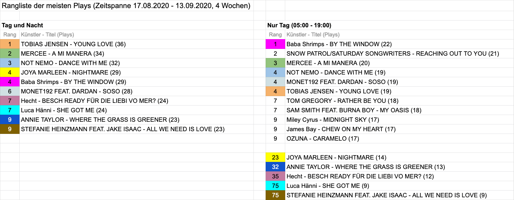

SRF3: Meistgespielte Songs: Vergleich 'Tag' vs 'Tag und Nacht'
- Station: SRF3
- Zeitspanne: 17.08.2020 - 13.09.2020
Die Grundfrage war: Erstellt man eine Rangliste für alle Plays zwischen 05:00 Uhr und 19:00 Uhr, wie unterscheidet sich die gegenüber der Rangliste des ganzen Tages (bzw “Tag und Nacht”).
Das Resultat kann wie folgt zusammengefasst werden:
Viele Schweizer Künstler erhalten in der Nacht (zwischen 19:00 Uhr und 05:00 Uhr) besonders viele Plays.
Auf der Rangliste “Meistgespielte Songs Tag und Nacht” stehen ausschliesslich Schweizer Künstler!
In der Rangliste “Meistgespielte Songs Nur Tag”, fallen 5 Künstler der “Tag und Nacht”-Rangliste raus. Ersetzt/überholt werden sie von ausländischen Künstlern wie Snow Patrol, Tom Gregory, Sam Smith, Miley Cyrus, James Bay und Ozun.
SRF3 betreibt von Montag bis Freitag zwischen 19:00 Uhr und 20:00 Uhr ein Programm namens “Punkt CH”, wo nur Lieder von Schweizer Künstlern ausgestrahlt werden. Erweitert man den Zeitraum der “Nur Tag”-Rangliste auf 20:00 Uhr, verändert sich die Rangliste nicht entscheidend: Gleiche Künstler, jedoch leicht andere Reihenfolge.
